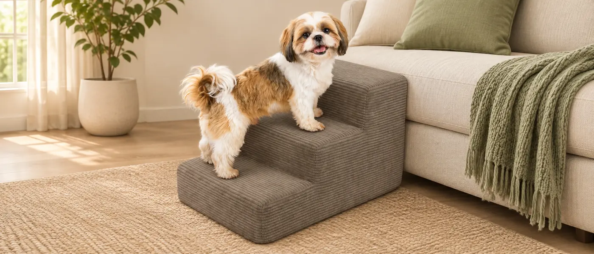

Nota sobre las fuentes: este artículo resume, en español, experiencias compartidas por usuarios en dos hilos públicos de Reddit, originalmente en inglés. No son una encuesta ni una prueba de producto de Vida Perruna. Las resumimos con enlaces para que puedas leer el contexto completo.
1. Los dueños describen resultados muy distintos
En una conversación de r/seniordogs sobre perros que rechazan la rampa, varios participantes describen preferencias opuestas: algunos dicen que sus perros acabaron usando escalones de espuma; otros cuentan que el perro no confió en una superficie que se movía o siguió saltando. Una persona comentó que el mismo perro aceptaba los escalones en un lugar, pero no en otro.
En otro hilo, esta vez sobre una perra de 14 años y una rampa para la cama, los usuarios de r/DogAdvice comparten formas distintas de adaptarse: algunos hablan de practicar poco a poco con premios; otros cuentan que su perro prefería un escalón bajo o descansar en una cama en el suelo. Son anécdotas, no resultados que podamos generalizar.
La parte que más me llamó la atención es que no basta con preguntar “¿rampa o escalones?”. También cuentan la confianza, la altura, el espacio, el tipo de suelo y si el perro tiene que subir, bajar o hacer ambas cosas.
2. Si se mueve, puede perder la confianza
En los relatos sobre rampas y escaleras aparece una preocupación práctica: que el apoyo se desplace o se sienta inestable. Antes de dejar que el perro suba, revisa que la base no patine, que la rampa apoye en sus dos extremos y que los escalones no se hundan ni se deslicen bajo sus patas. La superficie también debe dar buen agarre.
La guía de VCA sobre adaptar el hogar a un perro con movilidad reducida indica valorar las rampas o escaleras con el veterinario y enseñar su uso de forma gradual cuando sea apropiado. Si hay dolor, debilidad o un cambio reciente al moverse, consulta primero.
3. Los premios ayudan a practicar; no garantizan que le guste
Algunos participantes cuentan que usaron premios para animar a sus perros a acercarse o recorrer la rampa. Puede ser una forma amable de presentar una superficie nueva si el veterinario considera que esa ayuda encaja. Empieza con el dispositivo bajo y firme, deja que el perro lo explore y avanza a su ritmo. Acompáñalo y supervisa también la bajada: varios usuarios explican que su perro aprendió a subir, pero seguía saltando al bajar.
Si se paraliza, salta por encima, resbala o intenta evitarlo, no lo empujes ni lo arrastres. Para ese perro, quizá la inclinación, la forma o la situación no sean adecuadas.
4. Si no acepta la ayuda, hay que reconsiderar la situación
Unos perros prefieren rampas; otros, peldaños anchos; y algunos se manejan mejor con su cama en el suelo o con ayuda directa según las indicaciones profesionales. Reduce el desnivel si puedes, despeja la zona y considera su equilibrio, visión y coordinación. No des por hecho que una solución que le sirvió a otro perro también será cómoda para el tuyo.
Si la dificultad para subir o bajar es nueva, empeora o aparece junto con dolor o pérdida de fuerza, contacta con el veterinario antes de probar nuevas ayudas.

Escalera de espuma Feandrea
En el catálogo la tenemos descrita con funda extraíble y base antideslizante. Antes de elegirla, revisa en la ficha de Amazon la altura, la profundidad y el número de peldaños de la variante concreta; compáralos con el mueble y con el tamaño y la forma de moverse de tu perro.Podría merecer una revisión si: el perro aún camina con control, le resultan cómodos los peldaños y puedes colocar la escalera sobre un suelo estable. No es una prueba nuestra ni una recomendación clínica. Si tu perro tiene dolor, problemas de equilibrio o no quiere usarla, consulta con su veterinario y valora otras opciones.
Enlace de afiliado: si compras desde este enlace, Vida Perruna puede recibir una comisión sin coste adicional para ti.
Ver la escalera de espuma en Amazon ↗Artículo publicado el 13 de noviembre de 2026. Conversaciones consultadas el 13 de noviembre de 2026; pueden cambiar o desaparecer.